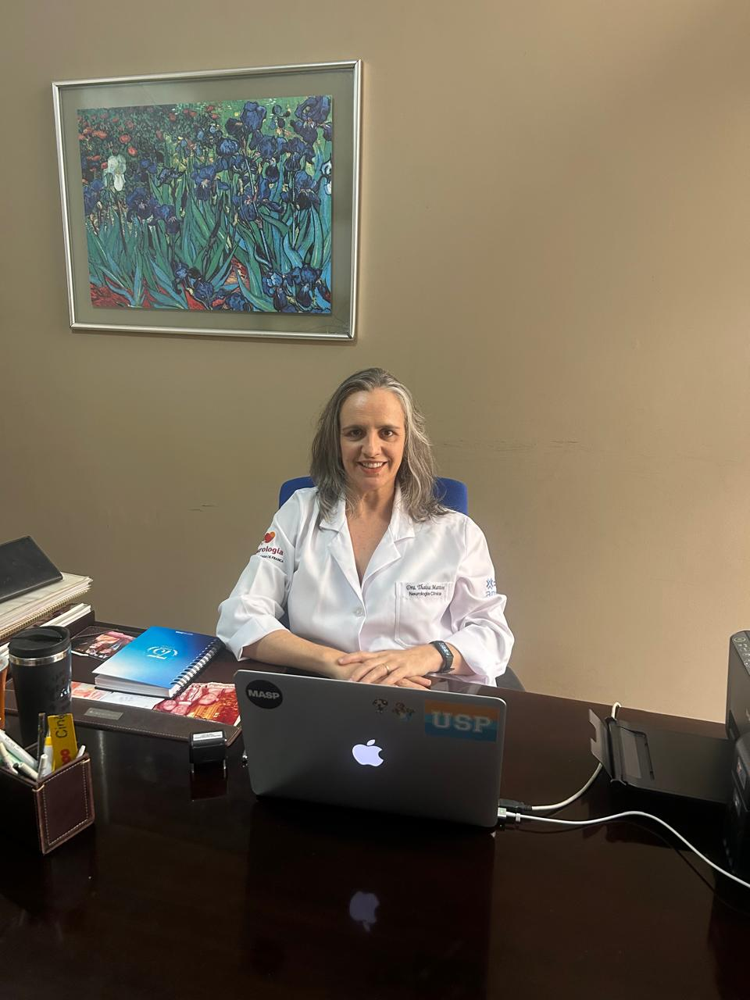
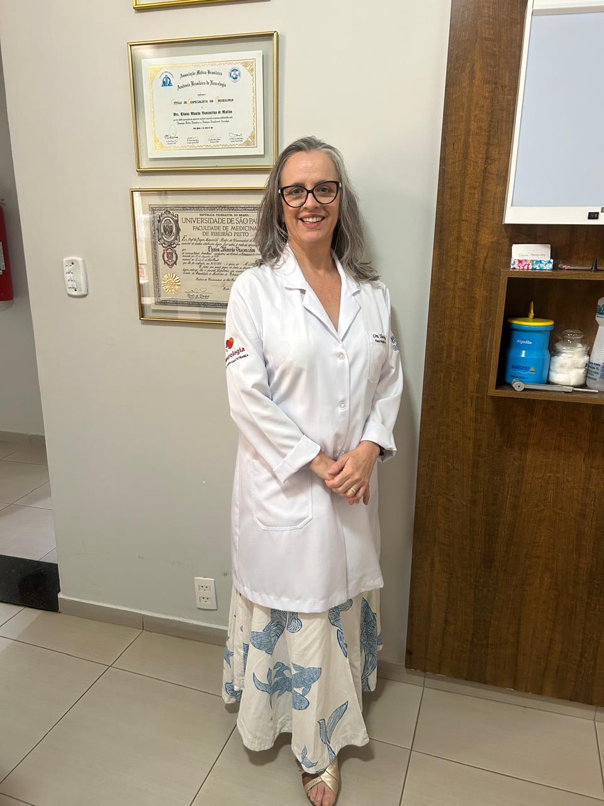

Dra. Thaisa Mattos
Neurologista
Avaliação neurológica individualizada, com atenção às necessidades de cada paciente.


Conheça a Dra. Thaisa Mattos
Com uma abordagem próxima e atenta, a Dra. Thaisa Mattos dedica-se a compreender cada paciente de forma individualizada, unindo conhecimento técnico e escuta cuidadosa em cada consulta de neurologia.
Seu objetivo é oferecer um atendimento que transmita segurança e clareza, ajudando cada pessoa a entender melhor sua saúde neurológica e os passos necessários para o cuidado adequado.
Ver formação e atuação completa →Formação e atuação
Uma trajetória acadêmica e profissional dedicada ao estudo e à prática da Neurologia.
Formação
Graduação em Medicina pela Faculdade de Medicina de Ribeirão Preto — USP (FMRP-USP), 1999.
Especialização
Residência médica e Título de Especialista em Neurologia pela FMRP-USP (2003). Mestrado em Neurologia pela FMRP-USP (2007).
Experiência profissional
Médica neurologista da Fundação Santa Casa de Misericórdia de Franca, atuando como coordenadora médica da Enfermaria de Neurologia Clínica e da Unidade de AVC. Professora de Neurologia nas Faculdades de Medicina da Universidade de Franca (Unifran) e do Uni-FACEF.
CRM / RQE
CRM 97597 SP
RQE 93685
Cursos e atualizações
Formação complementar em Toxina Botulínica para Espasticidade (USP) e Doppler Transcraniano, com participação constante em congressos brasileiros de Neurologia.
Associações e títulos
Membra titular da Academia Brasileira de Neurologia e membra da Sociedade Brasileira de AVC e da World Stroke Organization.
Áreas de atuação
Dentro da Neurologia Geral, com atuação voltada especialmente a neurologia vascular (AVC), demências, cefaleias, Doença de Parkinson e distúrbios de atenção e cognição.
Neurologia Geral
Avaliação, diagnóstico e acompanhamento de condições neurológicas.
Neurologia Vascular · AVC
Avaliação e acompanhamento do Acidente Vascular Cerebral (AVC) e suas consequências.
Demências · Alzheimer
Avaliação e acompanhamento da Doença de Alzheimer e de outras formas de demência.
Cefaleias
Investigação e acompanhamento de dores de cabeça e enxaquecas.
Doença de Parkinson
Avaliação e acompanhamento dos sintomas motores e não motores da Doença de Parkinson.
Atenção e Cognição
Avaliação de distúrbios de atenção, memória e outras funções cognitivas.
Quando procurar um neurologista?
Alguns sinais merecem uma avaliação especializada. Reconhecer esses sintomas é o primeiro passo para cuidar da sua saúde neurológica.
Se você reconhece algum desses sinais, buscar uma avaliação profissional é um passo importante para cuidar da sua saúde.
Como funciona a consulta
Um processo pensado para oferecer clareza e tranquilidade em cada etapa do seu cuidado.
Agendamento
Escolha o melhor horário para sua consulta.
Avaliação
Conversa detalhada para compreender sintomas, histórico e necessidades.
Investigação
Quando necessário, podem ser solicitados exames complementares.
Acompanhamento
Definição das orientações e do acompanhamento adequado para cada paciente.
Entenda 4 condições neurológicas comuns
Informações gerais para ajudar você a reconhecer sinais e compreender melhor essas condições.
AVC
Doença que mais mata em nosso país, Ocorre quando o fluxo de sangue para o cérebro é interrompido, por obstrução ou rompimento de um vaso. Fraqueza súbita de um lado do corpo, dificuldade para falar ou enxergar exigem atendimento imediato — quanto mais rápido o diagnóstico, menores as chances de sequelas.
Alzheimer e demências
Grande preocupação em saúde pública pois o aumento de incidência acompanha o envelhecimento da população, são condições que causam perda progressiva de memória e de outras funções cognitivas, afetando as atividades do dia a dia. Esquecimentos frequentes, desorientação e mudanças de comportamento são sinais que merecem avaliação neurológica.
Cefaleias e enxaqueca
Queixa neurológica mais comum, as dores de cabeça têm causas variadas, da tensão do dia a dia à enxaqueca, uma condição neurológica com crises recorrentes. Dor muito intensa, súbita ou associada a náusea e sensibilidade à luz merece investigação.
Doença de Parkinson
Segunda doença degenerativa mais comum ( a primeira é a Doença de Alzheimer), essa doença neurológica progressiva que afeta o controle dos movimentos, causada pela redução de dopamina no cérebro. Tremores em repouso, rigidez muscular e lentidão de movimentos costumam ser os primeiros sinais.
Experiências de nossos pacientes
Avaliações reais de pacientes, publicadas no Google e no Doctoralia.
Atendimento cuidadoso e minucioso, com explicações claras para o paciente e a família em cada consulta.
Depois de uma neurite óptica, o acompanhamento da Dra. Thaisa foi essencial para minha recuperação.
Excelente e atenciosa.
Veja mais avaliações no Google e no Doctoralia.
Perguntas frequentes
Reunimos as dúvidas mais comuns sobre a consulta com um neurologista.
Quando você apresentar sintomas como dores de cabeça frequentes, alterações de memória, tonturas, formigamentos, tremores ou outros sinais neurológicos persistentes.
Não é necessário encaminhamento. Você pode agendar sua consulta diretamente.
A consulta envolve uma conversa detalhada sobre sintomas e histórico, seguida de exame neurológico e, quando necessário, solicitação de exames complementares.
Sintomas relacionados ao sistema nervoso, como dores de cabeça, alterações de memória, tonturas, distúrbios do sono, tremores e crises convulsivas, entre outros.
Sim, a Dra. Thaisa Mattos atende por teleconsulta (online), além do atendimento presencial. O agendamento é feito diretamente pelo WhatsApp, com a secretária.
Quando necessário, podem ser solicitados exames complementares de acordo com a avaliação de cada caso.
Dê o primeiro passo para cuidar da sua saúde neurológica.
Entre em contato e agende sua avaliação com a Dra. Thaisa Mattos.
Agendar pelo WhatsAppWhatsApp: todos os dias, 13h às 19h
Localização do consultório
Endereço
R. Thomaz Gonzaga, 2171 - Centro, Franca - SP, 14400-540
Telefone
+55 16 99324-2964
+55 16 99324-2964
Horário de atendimento
Presencial: seg., ter. e qua., 17h às 19h · qui. e sex., 7h30 às 12h
WhatsApp: todos os dias, 13h às 19h